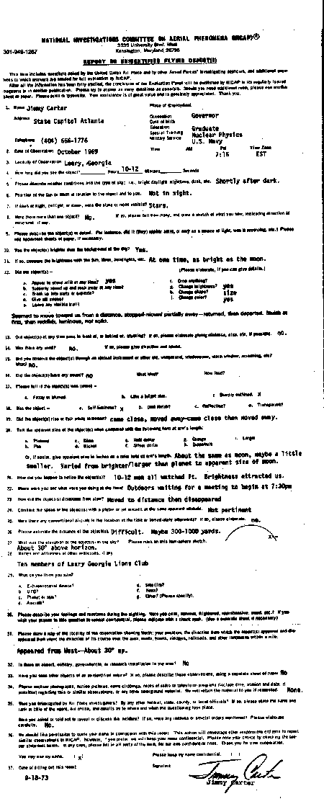

Ce formulaire inclut des questions posées par l'Armée de l'Air des Etats-Unis et par d'autres agences d'enquête de
Forces Armées*, ainsi que d'autres questions dont les réponses sont nécessaires pour une évaluation complète par le NICAP.
Après que toute les informations aient été pleinement étudiées, la conclusion de notre Panel d'Evaluation sera
publiée par le NICAP dans son magazine paraissant régulèrement ou dans une autre
publication. Merci d'essayer de réponser à autant de questions que possible. Au cas où vous auriez besoin d'espace
supplémentaire, veuillez utiliser une autre feuille de papier. Veuillez imprimer ou taper à la machine. Votre aide est
de grande valeur et est véritablement appréciée. Merci.
Le formulaire d'origine

Nom : Jimmy Carter Adresse : State Capitol Atlanta Téléphone : (404) 666-1776
Occupation : Gouverneur Date de naissance : Education : Formation spéciale : Graduate
Nuclear Physics Service militaire : Marine U.S. Heure : AM : PM : 7:15 Fuseau
horaire : EST
Pendant combien de temps avez-vous vu l'objet ? _____ heures 10-12 minutes ______ secondes
Veuillez décrire les conditions climatiques et le type de ciel ; i.e., jour clair, nuit, crépuscule, etc. :
Peu après la tombée de la nuit.
Position du Soleil ou de la Lune par rapport à l'objet et à vous : Non visible.
Si observé la nuit, au crépuscule, ou à l'aube, les étoiles ou la Lune étaient-elles visibles ?
Etoiles.
Il y avait-il plus d'un objet ? Non. I
Le ou les objets étaient-ils plus lumineux que le ciel lui-même ? Oui.
Si oui, comparez la luminosité à celle du Soleil, de la Lune, de phares, etc. A un moment, aussi brillant
que la Lune.
Le ou les objets
étaient-ils présents à tout moment ? Oui.
changeaient-ils de luminosité ? Oui.
Le ou les objets passèrent-ils à un moment devant ou derrière quelque chose ? Si oui, indiquez-en
la distance, la taille, etc, si possible : Non.
Avez-vous observé le ou les objets au travers d'un instrument optique, pare-brise, fenêtre,
écran, etc. ? Lequel ? Non.
Le ou les objets avaient-ils un contour précis ? Oui.
Le ou les objets possédaient-ils une lumière propre ? Oui.
changeaient-ils de forme ? Taille.
changeaient-ils de couleur ? Oui.
Le ou les objets effectuaient-ils un mouvement d'ascension ou de chute ? Il s'approcha, s'éloigna, se
rapprocha et s'éloigna encore.
Il y avait-il du vent ? Non.
Donnez sa taille apparente sur un décimètre tendu à bout de bras : Environ la même que celle de la Lune,
peut-être un peu plus petit.
Comment en êtes-vous venu à observer le ou les objets ? Une douzaine d'hommes l'observaient. La lumière
avait attiré notre attention.
Où étiez-vous et que faisiez-vous à ce moment ? Nous attendions devant les portes d'une salle où devait se
tenir un meeting à 19 h 30.
Comment le ou les objets disparurent-ils ? Il s'éloigna jusqu'à disparaître.
Estimez la distance du ou des objets ? Difficile. Entre 300 m et 1 km.
Quelle était l'altitude du ou des objets dans le ciel ? Environ 30 degrés au-dessus de l'horizon.
Noms et adresses des autres témoins, s'il y en avait : Dix membres du Lions Club de Leary en Géorgie.
Dessinez une carte du lieu de l'observation indiquant le nord ; votre position ; la direction où le ou les
objets apparurent et disparurent ; la direction de son mouvement dans la zone ; les routes, villes, villages,
voies de chemins de fer, et autres signalements dans 2 km. Apparu à l'ouest à environ 30 degrés en
hauteur.
Existe-t-il un aéroport, ou des installations militaires, gouvernementales, ou de recherche dans la zone ? Non.